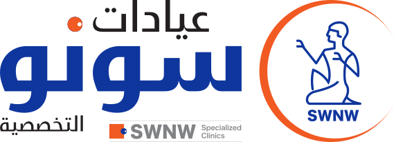

GitHub Pages
لم يبدأوصول موقع الداشبورد إلى الجهاز.

فحص سريع وآمن لاتصال الجهاز وخدمات الداشبورد، مع شرح مبسط للأخطاء والحل المقترح.
آخر الأخطاء المكتشفة أثناء استخدام الداشبورد، مع توضيح هل المشكلة ما زالت قائمة أو تم حلها.
كل اختبار مستقل عن الآخر لتحديد مكان العطل بدقة.
انسخه وأرسله للدعم أو ضعه في الشات بدل إرسال صور متعددة.